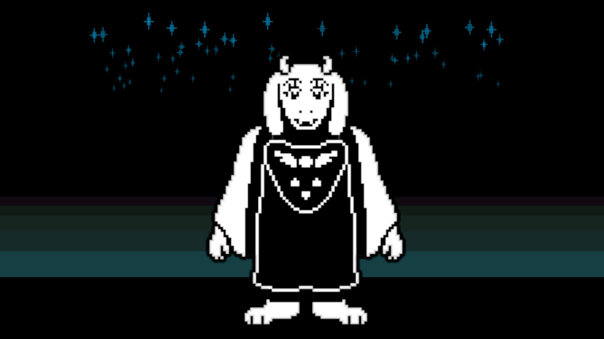
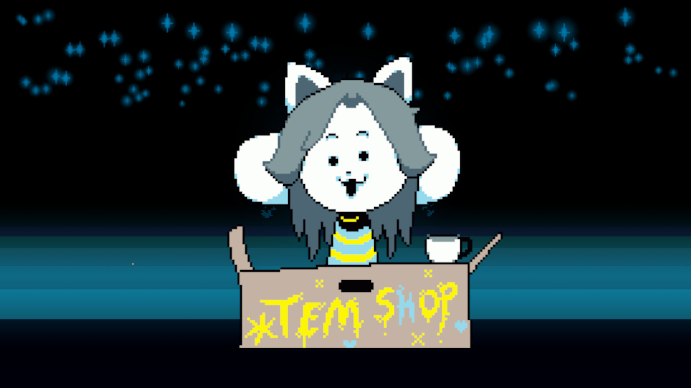
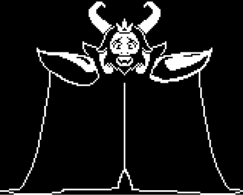
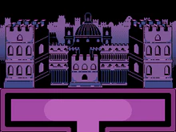

Discover the characters, bosses and locations of Undertale.
Sans
Sans is a mysterious skeleton who lives in Snowdin with his brother Papyrus. He is known for his jokes, relaxed personality and hidden abilities.

Papyrus
Papyrus is an energetic skeleton who dreams of joining the Royal Guard. He enjoys puzzles and wants to become famous.

Frisk
Frisk is the human protagonist who falls into the Underground and discovers the world of monsters.

Toriel
Toriel is the kind guardian of the Ruins who tries to protect Frisk.

Temmie
Temmie is a strange and cheerful monster who lives in Temmie Village. She has a unique way of speaking and loves spending time with other Temmies.

Undyne
Undyne is the captain of the Royal Guard. She is brave, determined and wants to capture the human.

Asgore
Asgore is the king of the Underground and the ruler of the monster kingdom.

Flowey
Flowey is a mysterious flower who plays an important role in Undertale's story.

Mettaton
Mettaton is a charismatic robot who loves entertainment and performing.

Ruins
The Ruins are the first major area Frisk explores in the Underground.

Snowdin
Snowdin is a snowy region where Sans and Papyrus live.

Hotland
Hotland is a hot volcanic region filled with technology and dangerous areas.